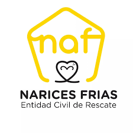
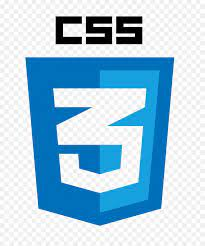
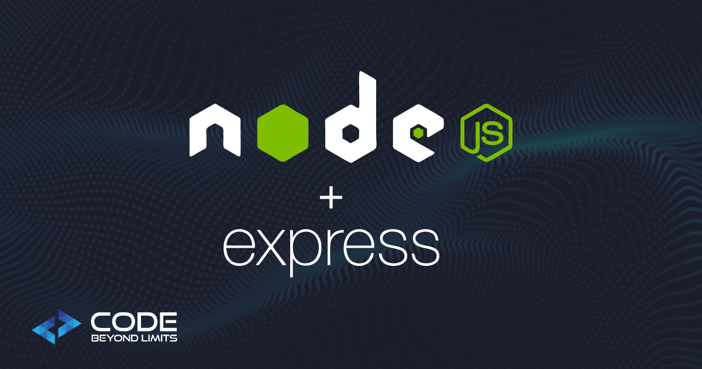
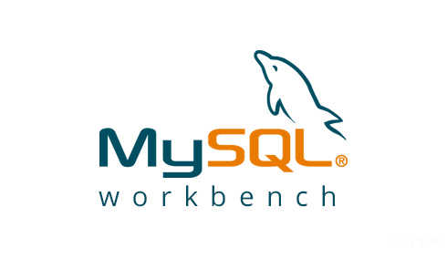
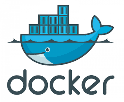

Sistema Web de Adopciones, Seguimiento y Veterinaria Interna Refugio de Animales 'Narices Frias'
Proyecto academico orientado a gestionar adopciones, seguimiento de mascotas y operaciones veterinarias internas con trazabilidad, control operativo y enfoque en bienestar animal.
React + NodeMySQL + DockerJWT SecurityImpacto Social
UNIVERSIDAD PRIVADA DEL VALLE

Entidad Civil Narices Frias
Introduccion al Proyecto
El proyecto nace de una necesidad operativa real del refugio y propone una
transformacion digital orientada al cuidado animal.
01
Contexto del problema
Gestion manual con planillas y documentos fisicos.
Desorganizacion y perdida de informacion clinica.
Demoras en atencion medica y procesos de adopcion.
02
Solucion propuesta
Gestion de animalesHistorial medicoAdopcionesSeguimiento post-adopcionReportes automaticos
03
Impacto esperado
+0%eficiencia administrativa esperada
Reduccion de costos operativos.
Atencion mas oportuna y personalizada por animal.
Objetivos del Proyecto
Objetivo General
Desarrollar un sistema web de adopciones, seguimiento y veterinaria
interna que optimice la gestion integral del refugio Narices Frias,
garantizando eficiencia operativa y bienestar animal.
Objetivo Especifico 01
Modulo de Gestion Veterinaria
Implementar un historial clinico digital con diagnosticos, vacunas
y tratamientos, incluyendo alertas automaticas para citas medicas.
Objetivo Especifico 02
Evaluacion y Seguimiento de Adopciones
Digitalizar formularios de adopcion, programar entrevistas,
realizar visitas domiciliarias y generar reportes post-adopcion
para asegurar hogares responsables.
Objetivo Especifico 03
Centralizacion de Datos
Disenar una plataforma que centralice toda la informacion de los
animales rescatados y adopciones en tiempo real, accesible por
roles definidos.
Acceso por roles
AdminVeterinarioCuidador
Metodologia y Herramientas
La estrategia combina una metodologia formal de desarrollo con gestion
colaborativa, trazabilidad tecnica y planificacion agil.
Marco de trabajo
Modelo RUP y UML
Aplicacion del Proceso Unificado Racional (RUP).
Fases: inicio, elaboracion, construccion y transicion.
Modelado UML: casos de uso, clases y secuencia.
Analisis
Gestion de requerimientos
Levantamiento de informacion con entrevistas.
Observacion directa y analisis de procesos reales.
Documentacion funcional y no funcional por modulo.
Calidad tecnica
Control de versiones con GitHub
Trabajo colaborativo con repositorios y ramas.
Uso de pull requests, issues y revisiones de codigo.
Mejora de calidad, historial y trazabilidad.
Organizacion
Planificacion agil con Trello
BacklogEn progresoEn revisionFinalizado
Las tareas se organizaron en tableros Kanban para mantener
transparencia, seguimiento continuo y colaboracion constante
entre los miembros del equipo.
Arquitectura del Sistema
La arquitectura combina una interfaz moderna, una API modular y una
base de datos relacional, ejecutada en contenedores y protegida por
autenticacion robusta.




Frontend con React.js
Desarrollo de una interfaz dinamica, responsiva y modular.
React permite actualizaciones en tiempo real, navegacion fluida
y reutilizacion de componentes.
Backend con Node.js y Express
Logica de negocio construida en JavaScript del lado del servidor.
Express facilita la creacion de rutas y la estructura modular del sistema.
Base de datos con MySQL
Almacenamiento relacional de datos clinicos, adopciones y usuarios.
MySQL garantiza integridad, seguridad y eficiencia en las consultas.
Contenerizacion con Docker
Ejecucion del sistema en contenedores para asegurar portabilidad,
replicabilidad y coherencia entre entornos de desarrollo y pruebas.
Seguridad con JWT
Autenticacion robusta mediante tokens JSON Web Token, protegiendo
el acceso y garantizando la confidencialidad de datos sensibles.
Modulos Principales del Sistema
El sistema se compone de modulos especializados que trabajan de forma
integrada para mejorar la operacion diaria del refugio.
Arquitectura pensada para el bienestar de perritos rescatados y adopciones responsables.
Modulo de Gestion Veterinaria
Registro clinico completo de cada animal, con diagnosticos,
tratamientos, vacunaciones y alertas automaticas para
proximos controles.
Modulo de Gestion de Usuarios
Roles diferenciados (administrador, veterinario, cuidador),
autenticacion segura y paneles personalizados segun
responsabilidades.
Modulo de Adopciones y Seguimiento
Publicacion de animales disponibles, evaluacion de adoptantes,
entrevistas y seguimiento post-adopcion con evidencia
fotografica y reportes.
Modulo de Notificaciones Internas
Alertas automaticas para vacunaciones, seguimientos, visitas y
tareas criticas. Mejora la coordinacion del equipo del refugio.
Modulo de Reportes Personalizados
Generacion de reportes en PDF/Excel sobre indicadores como
adopciones, salud animal y actividad del personal. Apoyo a la
toma de decisiones.
Resultados e Impacto del Proyecto
El sistema genera resultados medibles en gestion, bienestar animal y
escalabilidad institucional.
Impacto clave
+0 %
de eficiencia administrativa
Operacion
Reduccion de costos operativos
Adopciones
Mejora en adopciones responsables
Salud animal
Seguimiento clinico mas riguroso
Escalabilidad
Modelo replicable a nivel nacional
Justificacion del Proyecto
El proyecto se fundamenta en criterios tecnicos, economicos y sociales
que respaldan su viabilidad y su impacto en el refugio.
Enfoque tecnico
Justificacion Tecnica
Tecnologias modernas para arquitectura sostenible.
Mantenimiento mas claro, modular y eficiente.
Proteccion de datos sensibles de usuarios y animales.
+Seguridad y sostenibilidad
Enfoque economico
Justificacion Economica
Digitalizacion para reducir costos operativos.
Ahorro de tiempo en tareas administrativas.
Mas recursos para bienestar y cuidado animal.
-Costos y +eficiencia
Enfoque social
Justificacion Social
Promueve cuidado responsable de animales rescatados.
Impulsa adopciones mas conscientes y seguras.
Genera impacto positivo en la comunidad local.
+Impacto comunitario
Diagramas del Proyecto
Selecciona cualquier diagrama para visualizarlo en tamano completo.
Pruebas de calidad
La fase de pruebas del sistema web "Narices Frias" tuvo como objetivo
garantizar el cumplimiento de requisitos funcionales y no funcionales,
minimizar defectos y asegurar estabilidad y satisfaccion del usuario.
Marco de calidad
Se aplico un esquema basado en el modelo ISO/IEC 25010, evaluando
funcionalidad, usabilidad, confiabilidad, eficiencia y mantenibilidad.
0%Cobertura en declaraciones (Jest)0%Cobertura en ramas (Jest)~0 msTiempo promedio en endpoints (Postman)
Tecnicas aplicadas
Caja Blanca (Jest): Validacion de la logica interna del codigo.
Caja Negra (Postman): Verificacion funcional de endpoints (autenticacion, usuarios).
Pruebas de Regresion: Re-ejecucion de flujos criticos tras cada actualizacion.
Tipos de pruebas
Unidad: Validacion de funciones y controladores.
Integracion: Interaccion entre frontend, backend y base de datos.
Aceptacion (UAT): Pruebas en entorno real con personal del refugio.
Estimacion de costos
Bajo costoAlto impactoSostenible
Evaluacion economica del sistema "Narices Frias" con enfoque en
sostenibilidad, retorno operativo e impacto social.
Ejecucion del proyecto
El sistema fue desarrollado en 2 meses
(aproximadamente 320 horas) bajo modalidad voluntaria,
utilizando tecnologias open source: React, Node.js, MySQL y Docker.
Inversion del proyecto
0 BsCosto total estimado0 BsCosto material real (sin mano de obra)0 BsMantenimiento anual estimado
Beneficios obtenidos
0% de reduccion del tiempo administrativo.
0% de ahorro en papeleria.
Eliminacion de perdida de informacion.
Mayor transparencia y trazabilidad.
Optimizacion del trabajo del personal.
Analisis economico
Costo menor al 20% del valor comercial de un sistema similar.
Alto impacto social y retorno operativo.
Proyecto sostenible gracias a software libre y bajo costo anual.
Conclusiones del Proyecto
Sintesis final del trabajo dirigido y su impacto tecnico, operativo y social.
Cierre estrategico
Solucion efectiva y funcional
El sistema desarrollado resuelve de manera integral los problemas
detectados en la gestion del refugio Narices Frias, mejorando cada
proceso clave.
Impacto operativo
Transformacion digital real
Se paso de procesos manuales a una plataforma digital robusta,
eficiente y con impacto directo en la salud y bienestar de los animales.
Escalabilidad
Modelo replicable y sostenible
El diseno modular permite escalar y adaptar el sistema a otros
refugios sin reconstruir desde cero.
Crecimiento profesional
Formacion profesional consolidada
El desarrollo del proyecto integro conocimientos tecnicos,
habilidades de gestion, trabajo en equipo y compromiso social.